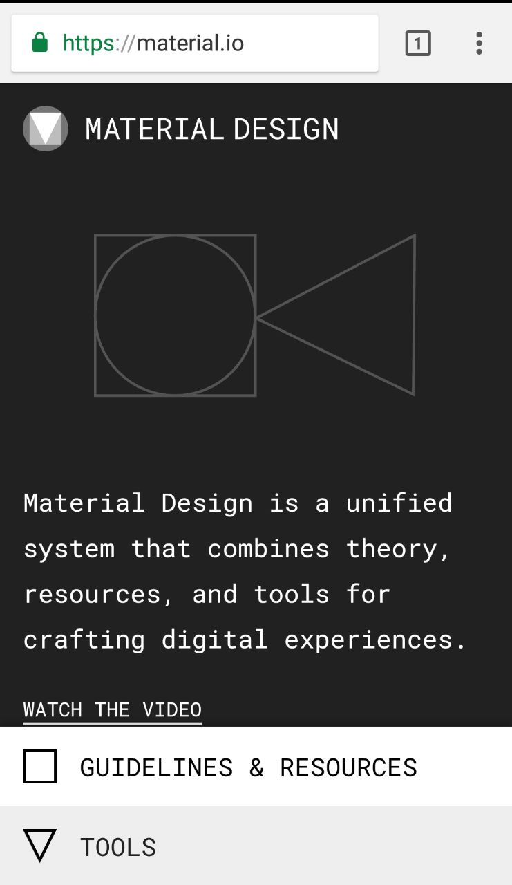
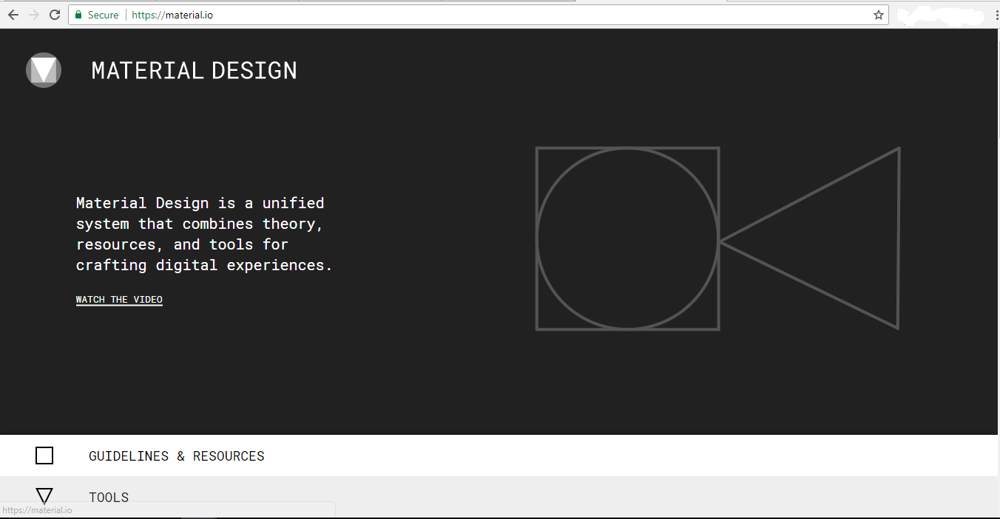

About UI design
Material Design is a Unified plan framework, implies it was made to work with all accessible the present gadgets and stages. From tablet, cell phone to work area and from Android, iOs, Windows to Web Platform. All plan looks and feels ought to be the same wherever it is.
I got my idea from the website materials.io it explains everything about material design and how to implement material design properly.
Materials.io contains all the resources needed for making a proper material design website.
Websites and applications should follow the guidelines provided to make a good material design.
Material design is mainly adopted by mobile devices. But material design can be made into any type of environment.
The screenshot below shows how material design can be adopted to both mobile and desktop fluently and consistently.
Mobile view
Desktop view
The decision to use material design came about as it is the current trend and also it is much cleaner design than anything out there.
Material design uses a minimalistic approach which helps in reducing clutter and being more user friendly to users.
Material designs will make the users navigate through the material design very comfortably as it is very pleasing to look at material design animation and it is very consistent in the way the navigations work.